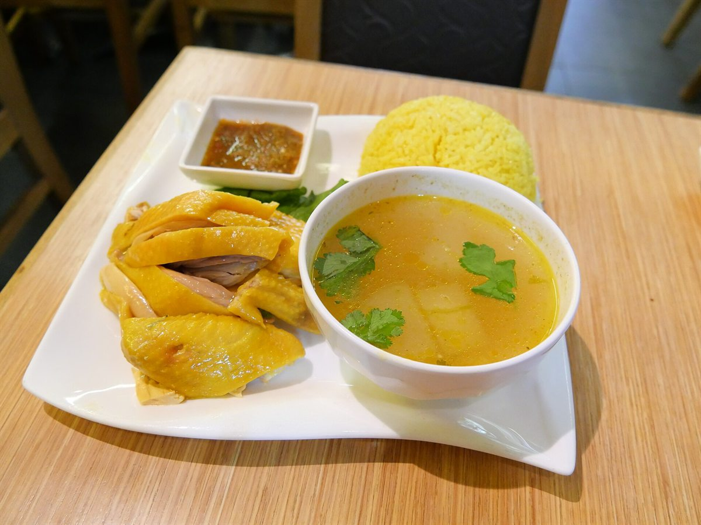

Today's pickYour random menu
พร้อมเสิร์ฟข้าวมันไก่
ไก่ต้มนุ่มฉ่ำ เสิร์ฟบนข้าวหุงมันหอม ๆ พร้อมน้ำจิ้มเต้าเจี้ยวรสกลมกล่อมและน้ำซุปอุ่น ๆ ที่ช่วยให้ทุกคำอร่อยขึ้น
ข้าวจานเดียว
คลาสสิก
ไก่ฉ่ำ
ไม่เผ็ด
ราคาโดยประมาณ
฿60
กดสุ่มได้ไม่จำกัด · ไม่ซ้ำเมนูเดิมติดกัน